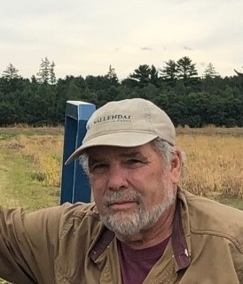
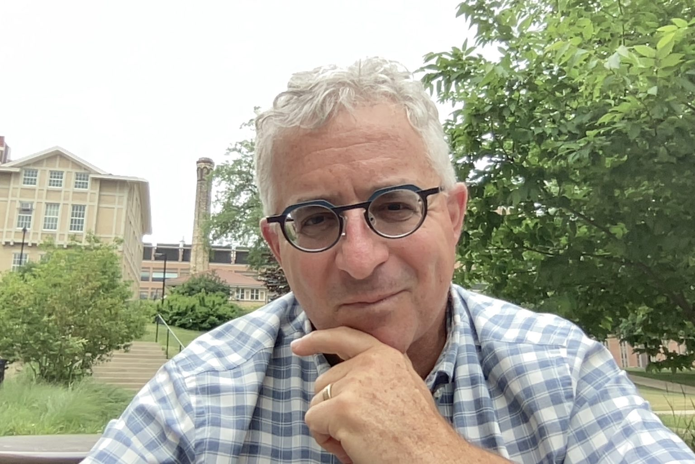
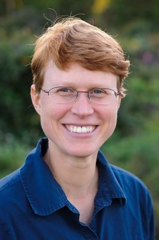
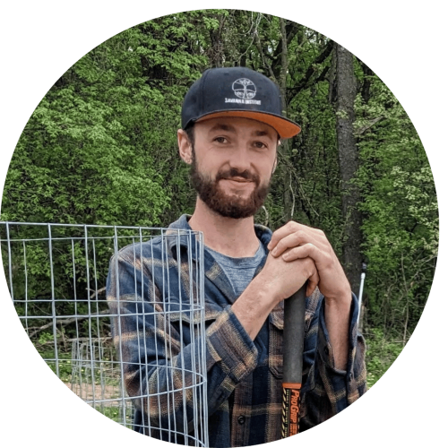

// It takes a village
The breeders, researchers, and contributors who generously share their time, expertise, and breeding materials with the PBC.
// Who we work with
None of what we do would be possible without the generosity of the people below. We are deeply grateful for their support of the next generation of plant breeders.
Ken earned his B.S. in Horticulture from the University of Wisconsin–Madison in 1978 and has devoted his career to bean breeding and research. After nearly two decades at UW–Madison studying edible dry and green beans, he joined Seminis Vegetable Seeds, where he led the Garden Bean Breeding Program across multiple continents and released over 30 commercial varieties with improved disease resistance. Since 2015, Ken has worked as an independent consultant and plant breeder, focusing on root rot and white mold resistance, genetic marker development, and innovative production methods.
🫘 Bean Breeding Material & Expertise
Shelby Ellison is an Assistant Professor in the Department of Plant and Agroecosystem Sciences at UW–Madison and a member of the graduate programs in Plant Breeding and Plant Genetics, Agroecology, and Horticulture. Her research focuses on preserving, characterizing, and utilizing genetic diversity in alternative crops to meet the needs of Wisconsin farmers. She is also interested in how human interactions with plants — through domestication and breeding — have altered the plant genome, and how selection signatures can trace crop improvement throughout history. Dr. Ellison is currently working with a multidisciplinary team of scientists and extension educators on best production practices and cultivars for Wisconsin hemp producers, and teaches courses in The Science of Hemp and Introduction to Horticulture.
🎓 Faculty AdvisorIrwin Goldman has been a faculty member at UW–Madison since 1992 and is a Professor in the Department of Horticulture. He runs breeding programs on carrot, onion, and table beet — crops the UW program has been breeding for over 75 years. Inbred lines, populations, and cultivars from his program are in use by farmers and plant breeders on six continents. His research focuses on vegetable crop genetics, health-related traits, and germplasm improvement, and he is a founding organizer of the Open Source Seed Initiative. Irwin teaches courses in plant breeding, vegetable crops, food and seed sovereignty, and evolutionary biology.
🎓 Faculty Advisor
Julie Dawson is an Associate Professor in the Department of Plant and Agroecosystem Sciences at UW–Madison, specializing in plant breeding for organic agriculture, participatory plant breeding, and on-farm conservation of genetic resources. She leads the Seed to Kitchen Collaborative, which partners with farmers and chefs to develop vegetable varieties suited to organic and diversified agricultural systems. Her research spans hazelnut genetics, variety trialing, and breeding methods that center farmer participation and agroecological adaptation. In addition to providing planting space for PBC projects, Dr. Dawson teaches Principles of Plant Breeding and Organic Vegetable Production.
🌱 Planting Space & Faculty Support
Malachi is from the Driftless Area of Wisconsin, where he grew up on various rural and urban farms. With a background in soil science and ecology, he does field and laboratory work for the Savanna Institute's Tree Crop Improvement Program, supporting the development of perennial and agroforestry crop systems.
🌳 Planting Space & Tree Crop Expertise
💡 To add a collaborator: Upload their photo to the photos/ folder, then copy one of the collaborator card blocks in collaborators.html and fill in their details.
// Want to work with us?
We're always looking for breeders, researchers, and organizations to partner with. Reach out!
Get in Touch →